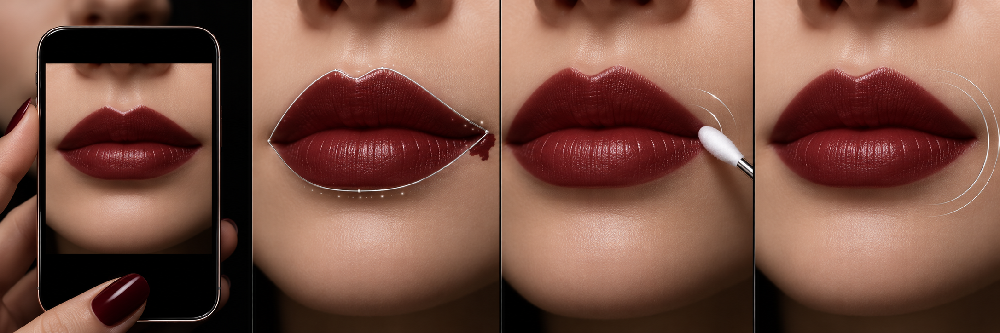
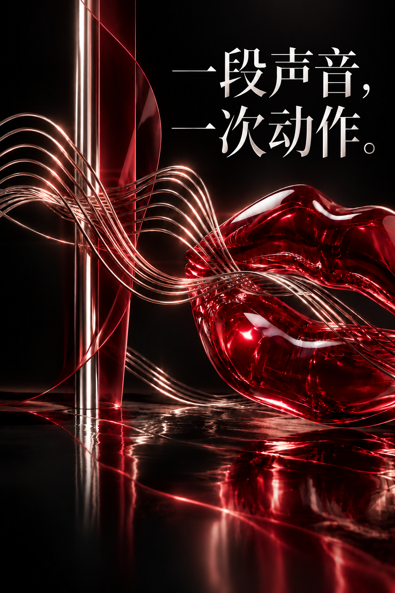
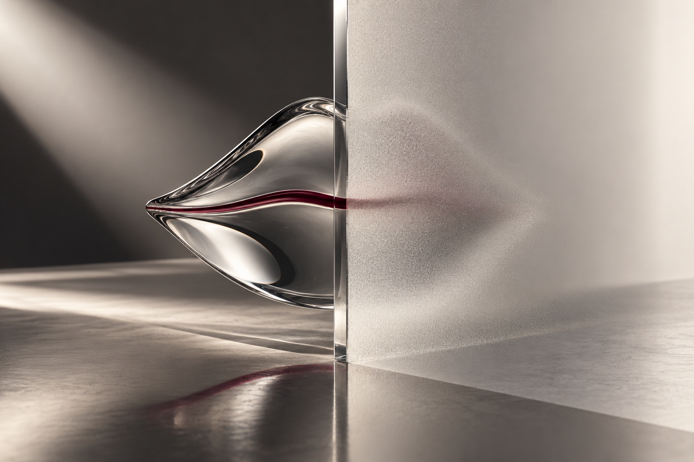

先得到一张可以判断的照片。
固定手机，面向均匀光源。画面不足时，先重拍，不急着给结论。

不是教人化妆，而是补上独立完成前的最后一次确认。
很多低视力用户已经有自己的化妆经验。真正缺少的，是出门前无需依赖他人的一次检查。
LEFT / RIGHT越过唇线了吗？
ONE ACTION应该处理哪一边？
RECHECK调整后改善了吗？

声音不是装饰。它把视觉判断拆成可以暂停、重听和继续的步骤。
固定手机，面向均匀光源。画面不足时，先重拍，不急着给结论。

不扩大能力边界，也不把本机亮度提示说成妆容识别。
说清用户自己的左右和方向，让调整发生在她自己的节奏里。
确认改善、继续调整或结束。每个出口都明确，不强迫完成。
从准备照片开始，听取一个动作，再次检查。可选择预设演示或实验性模型检查。
面向均匀光源，嘴唇自然闭合。摄像头预览不提供自动人脸定位。
把手机放稳，镜头朝向自己。面向均匀光源，嘴唇自然闭合。准备好后，可启动三秒倒计时拍摄。
当前只有准备指引，没有实时嘴唇追踪。需要时可上传一张已有照片。
没有摄像头也可以完成演示。
支持 JPG、PNG、WebP，最大 10 MB。选择照片不会自动发送；真实检查需单独同意。
尚未选择照片。
准备好了就开始
按下开始体验，听取取景提示。演示会模拟检查结果，带你走完一次修正流程。
结果来源：预设演示。尚未分析照片。
语音由浏览器朗读，支持情况取决于设备。
使用 VoiceOver 或 TalkBack 时，建议关闭自动语音播报，避免重复朗读。
这些控件只用于展示不同流程，不是用户的自我诊断，也不影响本机照片亮度提示。
复查不会自动变好，这里的结果也是预设。
按你的节奏推进，随时暂停或重听。
由你主动导出用时、流程事件；真实模式还包含模型、照片完整性原因和结果文案，不含照片或密钥。记录仅在当前页面保留，清除或重新开始会删除；请先导出。不是用户研究结果或 AI 准确率证明。
可保存文件。若浏览器不支持下载，也可复制上方文本。
可靠的辅助不只给答案，也要说明答案从哪里来、什么时候应该停下来。

演示不发送照片；真实检查需逐张同意，经项目服务端发送至外部模型服务。项目服务端不落盘保存照片，结束时释放摄像头和浏览器照片。
明确区分本机亮度提示、预设结果和未经验证的模型观察。外部服务的数据政策仍需了解。
画面、唇线或位置无法确定时先重拍。复查仅观察新照片，不宣称已验证改善。